MediCare Hospital Management System
A modern client-side hospital administration portal engineered with responsive UI architectures, instant LocalStorage persistence, and multi-role operations.
Why Digitize Healthcare Operations?
Traditional Hospital Pitfalls
-
Fragmented Physical Files
Paper records are easily misplaced, damage-prone, and take valuable minutes to locate during emergencies.
-
Appointment Double-Bookings
Unsynchronized paper logs lead to doctor schedule conflicts, patient delays, and missed check-ups.
-
Opaque Billing Calculations
Manual invoice tallying causes errors in medication charges, bed day tallies, and insurance delays.
The MediCare Solution
-
Centralized Digital Records
Instant CRUD access to medical history, blood group, contact info, and patient admission states.
-
Synchronized Calendar & List Engine
Dual-mode appointment views showing real-time clinical availability and status badges.
-
Dynamic Invoicing & Printable Rx
Real-time itemized price computation, payment method tagging, and formal print-ready receipts.
Core Technologies & Design Decisions
Semantic HTML5
Structured with semantic tags (<aside>, <header>, <table>). Integrated accessible modal dialogs with backdrop click delegation.
Modern CSS3
1,600+ lines of CSS utilizing CSS custom properties (:root), CSS Grid, Flexbox, micro-animations, and complete Dark Mode support.
Vanilla JS ES6+
1,400+ lines of modular client logic. Event delegation, dynamic templating, real-time filters, calendar calculations, and custom toasts.
Web Storage & Vercel
Persistent state management across browser sessions using LocalStorage API. Deployed on Vercel's global Edge CDN for high availability.
User Authentication & Role-Based Entry
-
Role Switcher Interface
Allows users to authenticate as Admin, Doctor, or Receptionist with dynamic UI role highlighting.
-
Animated Toast Notification
Custom non-blocking notification engine built in JS that alerts the user and auto-dismisses after 3 seconds.
-
Client-Side Session Storage
Stores credentials and selected permissions in Web Storage to personalize dashboard header avatars.
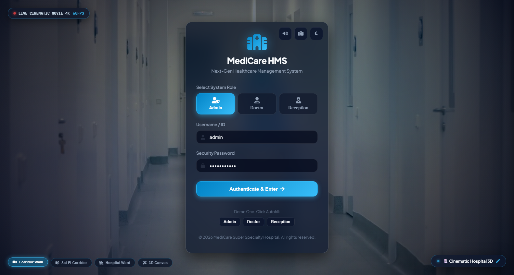
Interactive Executive Dashboard & Analytics
-
Real-Time Metric Aggregation
Dynamic counters compute patient headcounts, active appointments, revenue in INR (₹), and remaining beds.
-
CSS Department Visualizer
Pure CSS horizontal progress bars representing patient volume across Cardiology, Orthopedics, and Neurology.
-
Quick Action Panel
Direct one-click triggers allowing operators to quickly register a patient, book an appointment, or bill an invoice.
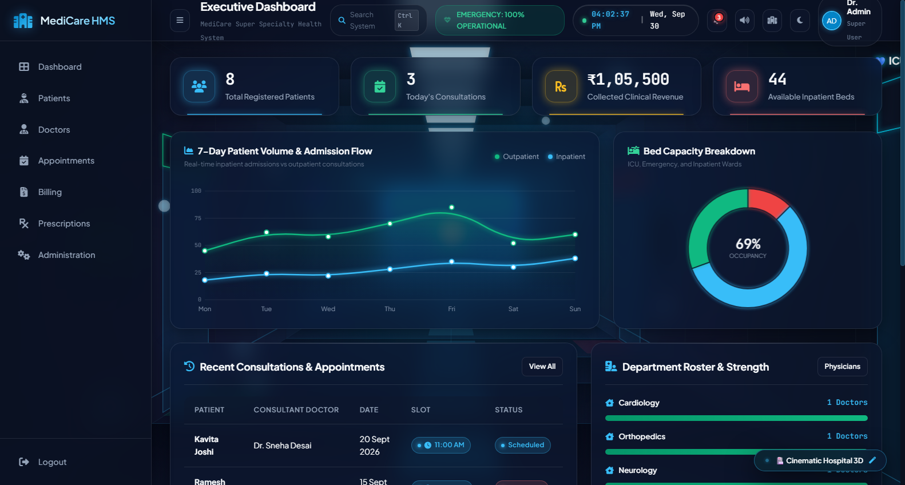
Patient Directory & Medical History Timeline
-
Real-Time Live Search
High-speed table filtering across patient name, ID, contact number, or medical condition without page reloads.
-
Complete CRUD Lifecycle
Register new patients, edit admission parameters, or archive discharged records with instant localStorage sync.
-
Chronological History View
A timeline modal tracking admission dates, surgical interventions, and stabilization events.
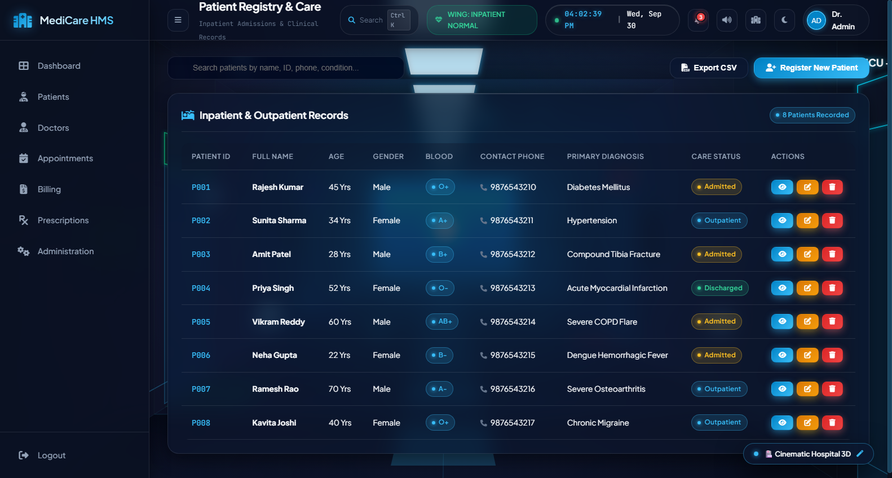
Doctor Profiles & Weekly Scheduling Grid
-
Responsive Physician Cards
Displays doctor avatar, specialization, department pill, phone, email, and total years of clinical experience.
-
Department Filter Dropdown
Instant sorting between Cardiology, Orthopedics, Neurology, Pediatrics, General Medicine, and Dermatology.
-
Weekly Shift Breakdown
Profile inspection modal displaying detailed daily clinic hours (e.g. Mon: 9AM-5PM, Sun: Off).
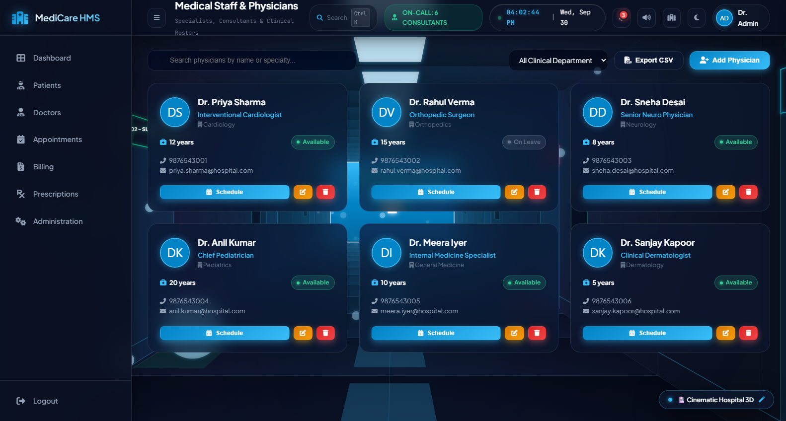
Appointment Engine: List & Interactive Calendar
-
Custom Calendar Algorithm
Calculates month days, leap years, first-day offset, and plots appointment indicator dots natively in JS.
-
Tabular Operations View
Full table view allowing receptionist staff to mark consultations Completed, Cancelled, or Rescheduled.
-
Relational Booking Modal
Dynamic select menus populated from stored Doctors and Patients to prevent scheduling discrepancies.
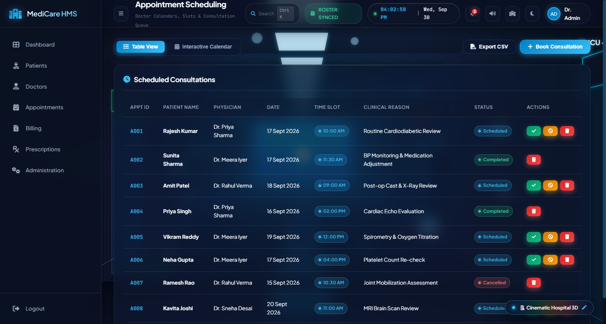
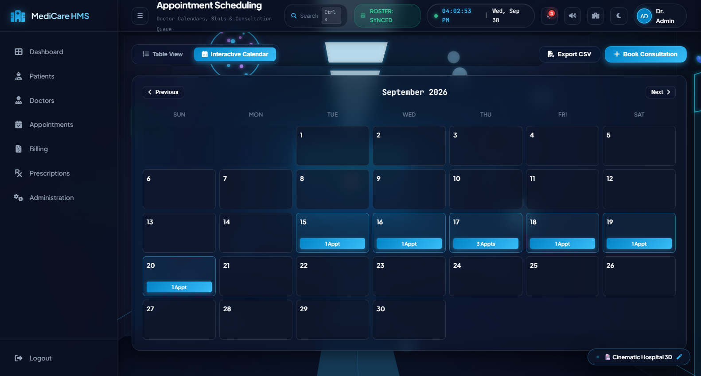
Invoicing, Financial Analytics & Print View
-
Financial KPI Cards
Calculates Gross Revenue, Pending Balances, Paid Invoices, and Overdue Settlement Alerts in INR (₹).
-
Dynamic Item Row Builder
Operators can dynamically append or remove billable charges with live mathematical auto-summing.
-
Print-Ready CSS Layouts
Specialized @media print styles hide navigation bars to produce formal clean hospital billing statements.
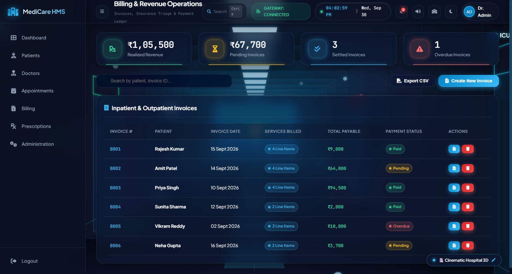
Digital Prescriptions & Pharmacy Workflow
-
Authentic Rx Document Layout
Generates standardized clinical prescription previews with patient diagnosis, physician details, and Rx branding.
-
Multi-Medication Rows
Supports structured drug entry including dosage, frequency (e.g. BD, TDS, SOS), and course duration.
-
Doctor Clinical Notes
Dedicated fields for dietary recommendations, contraindications, and scheduled follow-up dates.
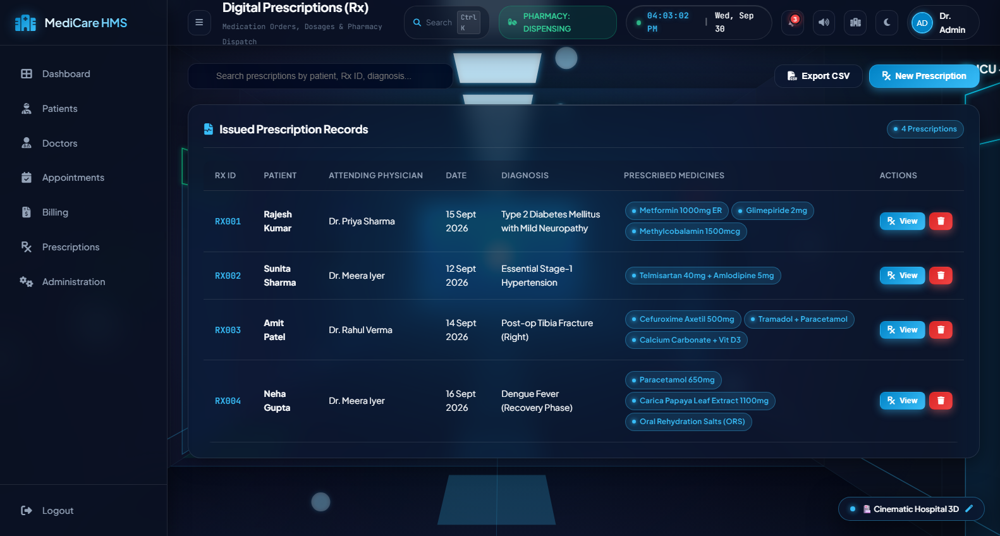
Hospital Administration & Resource Allocation
-
Staff Duty Rostering
Tracks nurse and technician allocations across Morning, Evening, and Night shifts with on-duty status tags.
-
Live Resource Capacity Bars
Progress bars reflect occupied vs total capacities for ICU beds, General wards, Ventilators, and Ambulances.
-
Dynamic Resource Modulation
Admins can update occupancy numbers directly via modal dialogs, immediately recalculating hospital metrics.
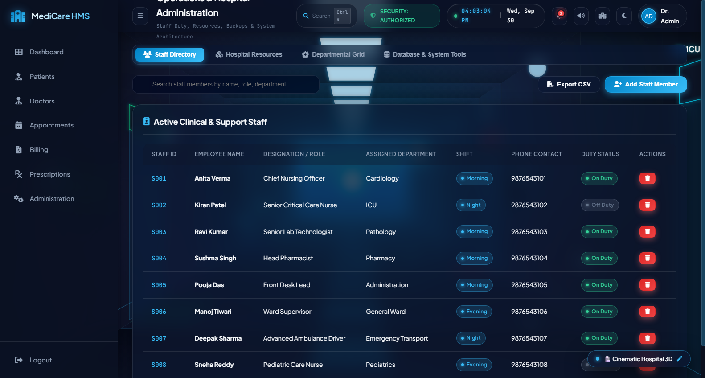
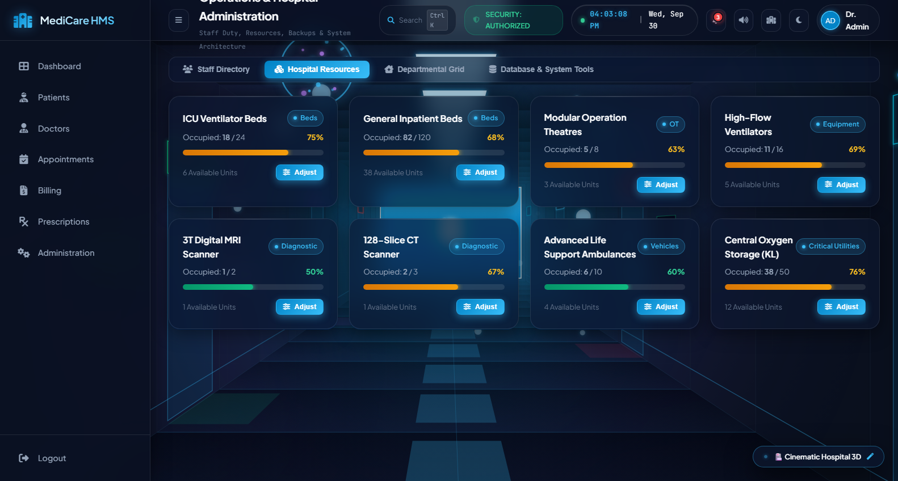
CSS Variables, Dark Mode & Responsiveness
-
CSS Custom Properties (:root)
Centralized design tokens for surface colors, typography scales, border radiuses, and elevation shadows.
-
Seamless Dark Mode Switch
One-click theme toggle applying .dark-mode to <body>, instantly swapping variables and saving to LocalStorage.
-
Responsive Media Queries
Fluid collapsible sidebar navigation that adjusts cleanly for tablets (768px) and mobile smartphones (480px).
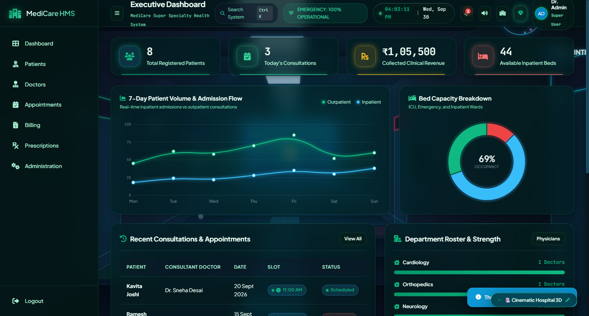
Live Production on Vercel Edge Network
Production Highlights
-
Edge Network Performance
Static assets served with Brotli compression and HTTP/2 across global edge points of presence.
-
Automatic SSL Encryption
Pre-configured TLS/HTTPS encryption ensuring secure healthcare administrative simulation.
-
Testable on Any Device
Classmates and instructors can open the URL directly on mobile phones or laptops right now.
Live Vercel Application
Deployed and accessible 24/7 with 100% uptime:
hospital-management-system-msz2.vercel.app Launch Live Website DemoThank You!
Questions, Feedback, & Live Demonstration Walkthrough